in this first article, we will take a look at hiragana, one of three (or four, if you count the Latin alphabet) scripts used to write the Japanese language. For those readers who already have some knowledge of Japanese and were studying with the Latin alphabet (romaji), hiragana represents the natural next level. Readers with zero or next-to-zero knowledge of Japanese, though, can start their studies directly with hiragana.
First, you need to know that hiragana is actually a syllabary; every “letter” represents a
syllable (called “kana”) rather than a phoneme. Where English (or any other language which uses the
Latin alphabet) would have one letter for the sound “m” and another for the sound “a” (then combining
them for the sound “ma”), in Japanese you have a symbol that, by itself, sounds “ma”: ま. Now if you want
to write “me”, you are not simply substituting the “a” for an “e”. Instead, there is a completely
different symbol for “me”: め.
Sounds complicated? It may be a bit for first-time learners, since it forces you to think in terms of
syllables rather than phonemes. However, once you start using it, not only it will become second nature
for you, you will also notice how this way of writing fits Japanese language very well, since all its
words follow a rigid syllable system. Think about words of Japanese you already know and how easily you
can break them into syllables: ka-ra-te, su-shi, ki-mo-no, ka-ta-na, wa-sa-bi.
Still think it’s complicated? Well, consider that there is a one-to-one correspondence between Japanese
kana characters and sounds, unlike in English. For example, while the “ba” in “banana” and “bay” sound
very different, in Japanese the same symbols always have the same sound. So, the “me” symbol we saw
earlier always sounds like “me” in “men”, never as in the English word “me”. You say tomato… I say
“tomato” too; that is the only option we have.
Learning Hiragana is critical to learning Japanese, as it is used to write native words for which there
are no kanji, including grammatical particles such as “kara” (“from”), and suffixes such as “san” (Mr.,
Mrs., Miss, Ms), as well as to write words whose kanji form is obscure. Finally, verb and adjective
inflections are also written in hiragana, often following a verb or adjective root that is written in
kanji. For example, “see” and “saw” are written in standard Japanese as 見る and 見た; the first symbol
gives the meaning (see) while the second symbol, in Hiragana, gives us the verb conjugation.
There are a total of 46 kana or letters in Hiragana. How you memorize them, in the end, depends on each learner. There are a variety of books, web sites and computer programs advertising different methods of memorization. My suggestion, though, is to use the same method you probably used to learn the alphabet: sit down, pen and paper, and write them down many times. As you write them down, repeating their sound to yourself may also help you to memorize each sound. Another thing you need to know before you start writing hiragana is that each symbol has a proper stroke order. Not that our letters do not have one, either – how many of you strike the dash on the A first, for example? Although writing out-of-order does not necessarily mean you will not be understood, it can generally be noticed when the symbols were written out of order and it makes for more messy handwriting, so please try to stick to the order.
Finally, on to the symbols! Let’s start with the always important vowels:
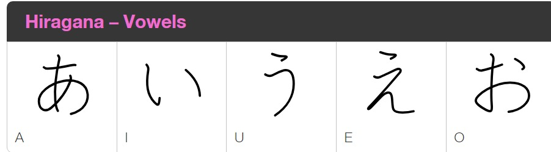
Japanese, like English, has five vowels (albeit in a different order). Remember, they always have the same sound – “a” as in “banana”, “i” as in “image”, “u” as in “zoo”, “e” as in “elephant”, and “o” as in “over”.
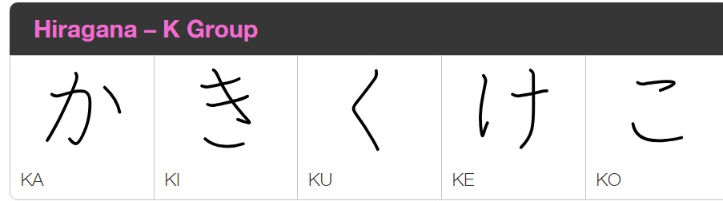
This is where you really have to stop thinking in terms of phonemes and think in terms of syllables. Instead of learning one single letter “K” and joining it to the five vowels you just learned, you have to learn five different symbols.
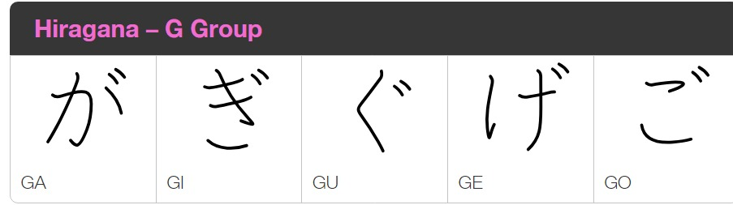
Do they look familiar? Indeed, the K-group and G-group are written almost the same. The difference, if you can spot, is in the “dakuten marker” or “ten-ten symbol”, aka this little symbol here ゛that looks like an apostrophe. By adding this marker, the hard K sound becomes the somewhat softer G sound. Please note that the G sounds strong in Japanese, so “ge” always sounds like “Gerry” or “get”, never as in “garage”.
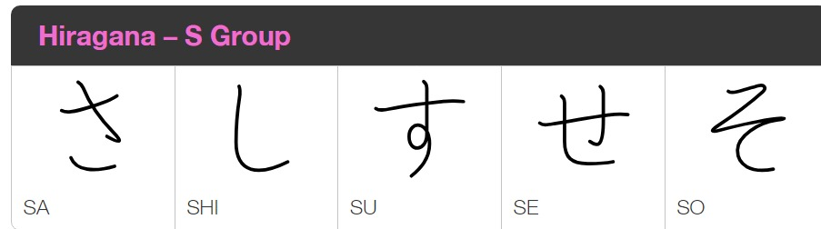
Moving forward to the S-group! The most important thing to notice here is that there isn’t a natural “si” sound in Japanese, only a “shi” one. This is the source of countless jokes about the Japanese pronunciation of some English words such as “city”. Please don’t go there. Another thing to note: after you memorize this line, you can already write the word sushi in Hiragana：すし！
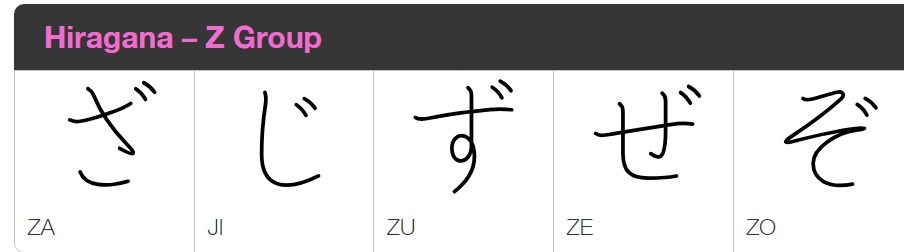
The Z-group is to the S-group as the G-group is to the K-group: just write the same symbols again, this time making sure to add the ten-ten symbol. Here, again, it’s the second symbol that may cause us trouble, as there is no natural ZI sound in Japanese, with the じ sounding closer to a JI sound, as in “Jimmy”. It is also the “ji” in “Mount Fuji”. That is why the Japanese word for Zimbabwe sounds something like “Jimbabwe”.
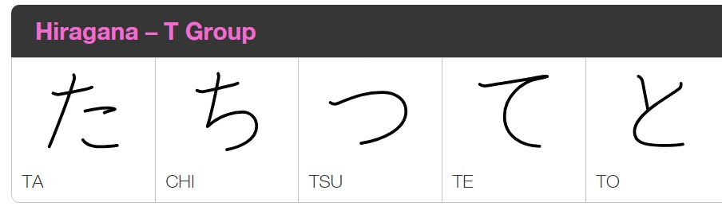
Have you started noticing that the second column is our problem child? There is no proper “ti” sound in Japanese, either; instead, we have “chi”, as in “chicken”, “cheese” or “Al Pacino”. Another thing to watch out is that in Japanese there is no “tu”, but only “tsu”, as in “Mitsubishi” or the infamous “tsunami”. Also, note how you can already easily break down every word I have mentioned so far into syllables: “Mi-tsu-bi-shi” and “tsu-na-mi”. Before we move on to the D group, there is another thing I should mention. There is a symbol called “sokuon” (you do not need to memorize these grammar names) that looks just like the “tsu” above. In fact, the Japanese just call it “small tsu” (see, I told you do not need to memorize the grammatical names). For your comparison, here is the regular one つ and here the smaller oneっ. Rather than having its own sound, the small tsu indicates a pause in the word. In our alphabet we normally indicate this pause by writing two consonants after the pause, as in the words “Nippon” (one of the ways of saying “Japan”), “ippon” (highest score in judo or karate), or “bukkake” (um, some things are better left unexplained).
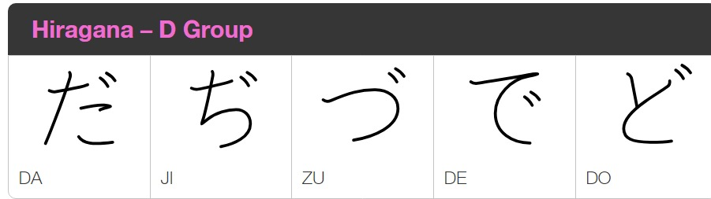
You already get how this is going: the D-group is made by simply adding the ten-ten mark to the T-group. Again, it’s the second and third columns that need some attention: the ぢ and づ have exactly the same sound as じ and ず. They are also rarely used, so you do not need to worry about them for now. Just as a curiosity, bear in mind that some romanization systems write ぢ and づ as “dzi” and “dzu” to differentiate them from じ and ず; this is how “kudzu” got its current pronunciation in English, even though it sounds “kuzu” in Japanese. If only they had properly learned Hiragana (like you are doing now) instead of sticking with our alphabet, they would have known the correct pronunciation!
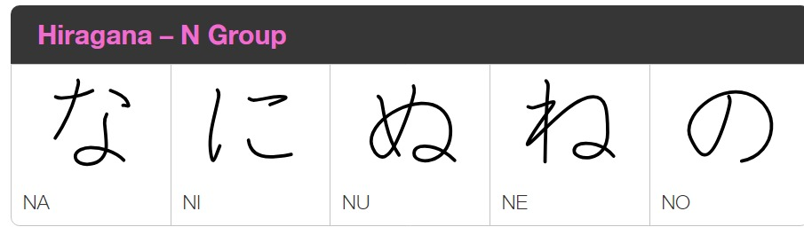
The N-group is a relatively easy one – everything sounds just as you would expect it to do, and there are no exceptions to worry about. Actually, now that I think about it, this group is a bit boring. Let’s go to our next group, the H-group!
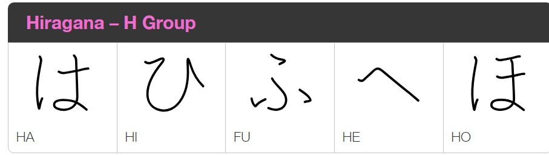
Aha! You probably thought we would be simply adding the ten-ten mark to the N-group now. Actually, the N-group has no other version (yep, it is that boring). Instead we have these new symbols, which I suggest you get accustomed to – as you will see in some articles from now, we will be using the H-group, and especially the は and the へ a lot. Please note that the H-group sounds like the English words “hell”, “hospital” or “helicopter” instead of the “silent H” present in some languages like Portuguese or English words like “honor” and “honest”. Please also take note of the symbol ふ, which in addition to being possibly the hardest kana to write, sounds like “fu” (as in “kung-fu”) instead of “hu”. That’s why we have words like “ofuro” and, again, “Mount Fuji” (yes, basically Mount Fuji exists to remind us learners of Japanese about the proper pronunciation of Japanese sounds).
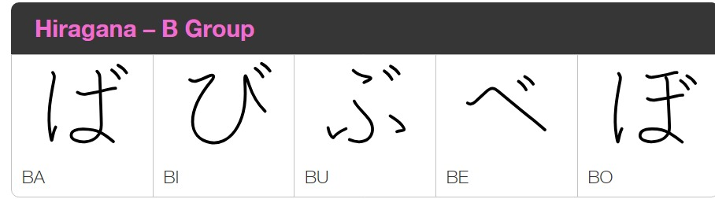
Welcome to the B-group! Once again we are adding the ten-ten mark to the previous group. This time there are no exceptions whatsoever – everything is as it should be, so lets waste no time as we move to our next group.
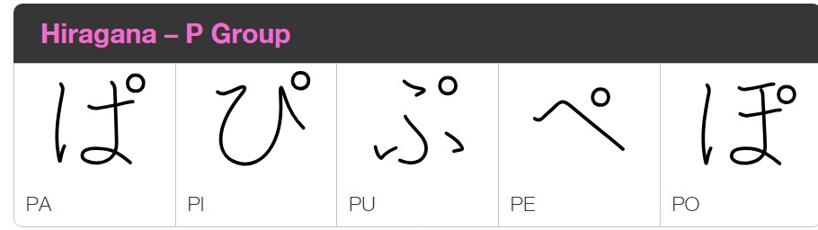
Surprise! The P-group also takes after the H-group, but this time instead of the ten-ten, we add a small circle called “handakuten” (again, please do not worry about remembering this) or “maru” (literally, “circle”). This is the only time we will use this marker. The “maru” is remarkably similar to the degree symbol (as in °C) and so you would be fine just writing it as so. There is not much to add, so let’s just move on to our next group.
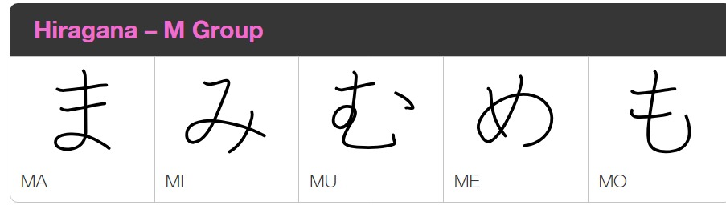
The M-group is very straightforward, having no exceptions whatsoever. Also, like the N-group before it, it does not have a “ten-ten” form; actually, none of the symbols we have yet to study have ten-ten forms. However, please note that as we learn more and more Hiragana, we start noticing some similarities between them: the ま symbol resembles somewhat the は from the H-group, and the め is very similar to the ぬ from the N-group, so please write them with attention.
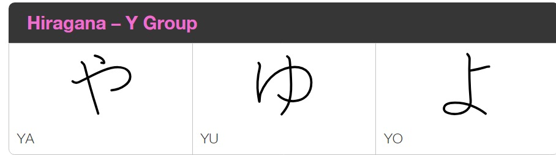
The Y-group only has three symbols – YA, YU and YO – but we will spend considerable time talking about them. Not because their sounds are hard – they sound just like you probably think they do (“Ya” as in “Yahoo”, “yu” as in “you”, and “yo” as the greeting “Yo!”), but because they can be combined with the previous Hiragana (specifically, with those in the “I” column) to make many different sounds. Sounds hard, but it isn’t. Let’s take a Japanese word that you probably know: ninja. Earlier we saw the hiragana for “ji” (in the Z-group, of all places), but we never saw the Hiragana for “ja”, so how do we write the word “ninja”? That is when the Y-group comes in handy. You see, to, write the sound “ja”, we combine the “ji” (じ) with “ya” (や) – actually, with a smaller version of it: じゃ. Need another example? Let’s take the former capital of Japan, Kyoto. In the K-group we saw no “ky”, so how can we write it? Again, we take the “ki” symbol and add the “yo” symbol to it: きょ, or “kyo”. And by the way, to show you again the limitations of using the Latin alphabet to write Japanese, Kyoto is actually written きょうと, so the proper rendition of it would be “Kyouto”. By the way, there are no Yi and Ye sounds in modern Japanese; their currency, which we call “yen”, is called “en” by the Japanese themselves.
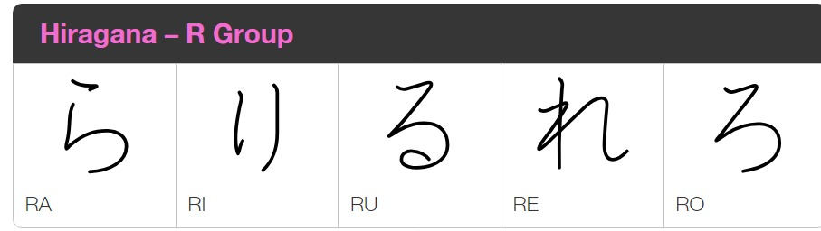
The R-group is a nice break after the Y-group. There are no exceptions, no special mentions, no asterisks – this is an easy group. Again, please mind the differences between る and ろ, and between れ and ね from the N-group. And finally, note that you can already write the word “Hiragana” in Hiragana: ひらがな. Rejoice!
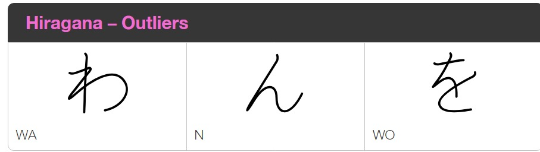
Finally, the last group, which I like to call “outliers”. First, there is “wa” and “wo”; wa is used in many words, such as “wasabi”, while wo is almost never used in words, but is often used as a grammar particle (we will get to those later). Finally, we have “N”, which is the single consonant sound you can write alone — that is, not followed by a vowel. That is how we make words such as “Nihon” にほん which means “Japan”. It is also the only symbol that can never begin a word in Japanese. The more you know!